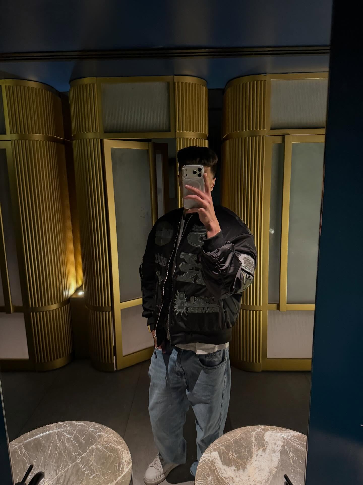

SHERIF KHALID
Sherif Khalid | شريف خالد
Sherif Khalid is a 28-year-old Egyptian content creator and influencer born in Al-Amireya, Cairo. He is one of the ambitious young figures who has built a strong presence across social media platforms, especially TikTok.
He started his content creation journey in 2018, and through determination, passion, and ambition, he built a large audience of millions of followers and achieved notable success in the social media space.
His ambitions went beyond content creation into music and performance, taking on diverse experiences that helped diversify his career and expand his reach with audiences.
Sherif Khalid represents an ambitious young creator continuously striving to grow, turn passion and ideas into real achievements, and pursue even greater success and excellence.

Baba Yad
Photos

